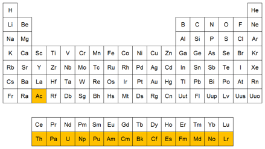

Os Actinídeos ou Actinoides fazem parte de um conjunto de elementos químicos do período 7 da tabela periódica. Juntamente com os Lantanídeos, são conhecidos como Metais de Transição interna.
O nome desse conjunto deve-se ao primeiro elemento dessa sequencia: o actínio (Ac) . O grupo é composto de 15 elementos distribuidos desde o número atômico 89 (actínio) até o número 103 (laurêncio).
Estes elementos apresentam características semelhantes entre si. Os de maior número atômico não são encontrados na natureza e apresentam tempos de vida média curtos. Todos os seus isótopos são radioativos.
